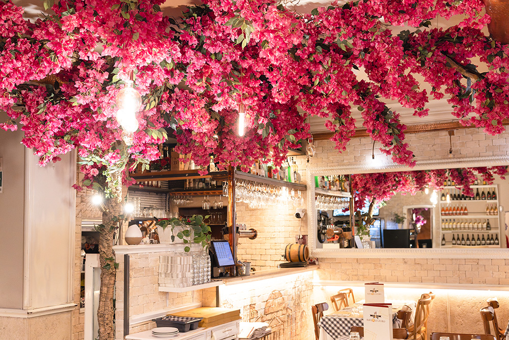
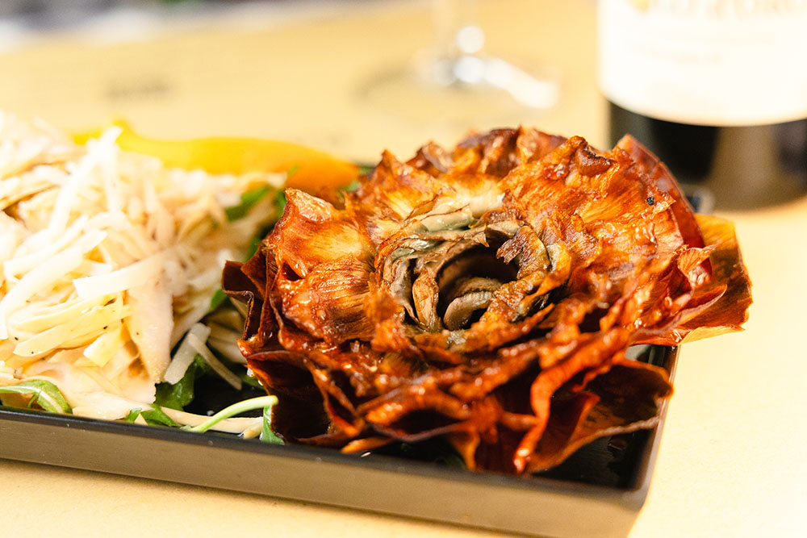
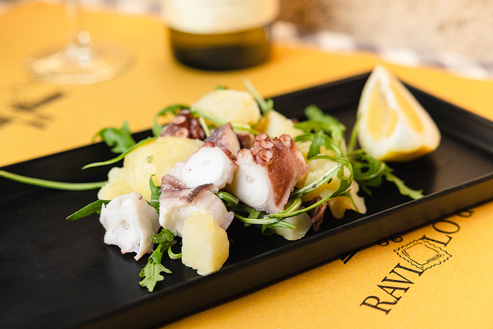
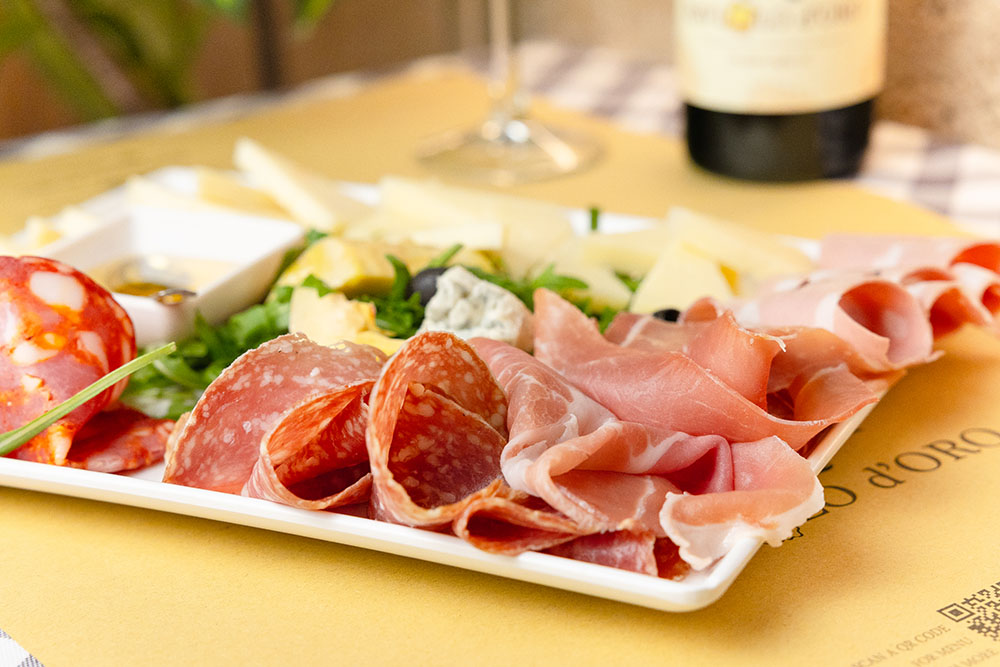
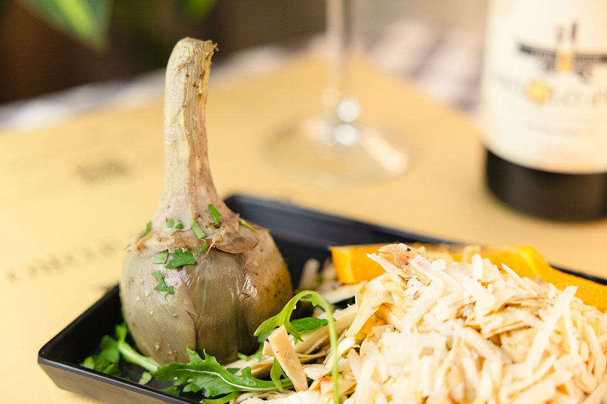
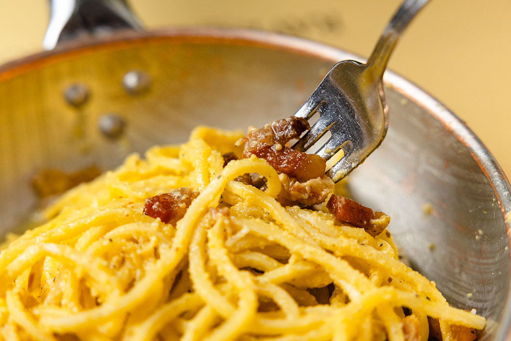

Piatto Firma
Ravioli Cacio e Pepe
€ 15,00Ravioli freschi fatti a mano ripieni di crema vellutata di Pecorino Romano DOP e pepe nero tostato in padella. Il perfetto connubio di cremosità ed energia.

A due passi dal Pantheon e da Montecitorio, Raviolo d'Oro è il rifugio autentico dei sapori romani: celebri ravioli artigianali fatti a mano ogni giorno e i grandi classici della tradizione capitolina.



In Via della Guglia 63, a pochi metri da Piazza Montecitorio, c'è un luogo dove il tempo rallenta per lasciare spazio alla memoria culinaria di Roma.
Raviolo d'Oro nasce dall'amore per la vera pasta all'uovo tirata a sfoglia sottile. I nostri mastri pastai creano ogni giorno ripieni equilibrati che fondono l'anima popolare romana con un tocco di eleganza contemporanea.
Semola di grano duro 100% italiano e uova fresche di fattoria.
Pecorino Romano DOP, guanciale amatriciano e carciofi romaneschi.
Sale storiche accoglienti e suggestivo dehors illuminato.
Staff caloroso e attento, per sentirsi sempre a casa.
Dai nostri celebri ravioli ripieni ai capisaldi della cucina romana eseguiti a regola d'arte.
Ravioli freschi fatti a mano ripieni di crema vellutata di Pecorino Romano DOP e pepe nero tostato in padella. Il perfetto connubio di cremosità ed energia.

Classico RomanoRigatoni trafilati al bronzo con tuorli d'uovo da galline ruspanti, guanciale croccante pepato e abbondante Pecorino Romano DOP. Zero panna, solo passione.

Tradizione Ebraico-RomanaIl vero carciofo romanesco 'cimarolo', aperto a rosa e fritto due volte fino a diventare croccante come una patatina ma tenerissimo al cuore.
Conferma immediata con selezione della sala preferita o del dehors romantico.
"Everything was good, Franco was the best waiter! The cacio e pepe ravioli were unforgettable. Highly recommend sitting in the cozy garden patio with lights."
"Very cool atmosphere and nice garden with lights! Service was super good and the waiter Ergis was very communicative and helpful. Best carbonara in Rome at fair prices!"
"Ergis... Excelente su atención! Muy muy atento. Los raviolis caseros estaban espectaculares y el carciofo alla giudia crujiente como en ningún otro lugar del centro."
Via della Guglia, 63, 00186 Roma RM (Montecitorio)
Lunedì – Domenica: 11:30 – 23:30 (Orario Continuato)
+39 06 678 2885 • WhatsApp: +39 352 089 1239